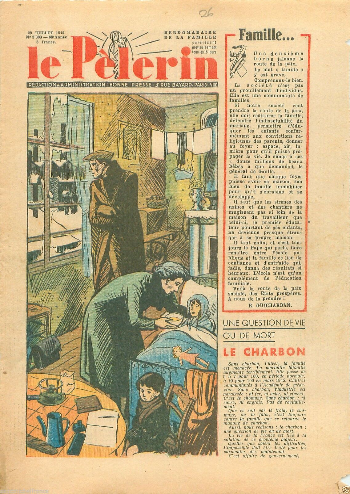

La famille au lendemain de la guerre
De 1939 à 1945, c'est toute une société qui s'est vouée exclusivement à l'effort de guerre. Le conflit a laissé des blessés, des veuves et des orphelins, mais la paix apporte aussi son lot d'ennui : réparation, épuration, rapatriement. Très rapidement, l'état français, au travers du Conseil National de la Résistance, a pour objectif de reconstruire sa société sur le plan moral, avec les lois d'amnistie de 1951 et 1953, et sur le plan démographique en développant des lois en faveur des familles.
La société française est alors encore une société traditionnelle : la famille en est le coeur. Et les mesures politiques renforcent ce noyau familial, d'abord sur le plan économique avec l’institution du quotient familial (Décembre 1945), allocation prénatale et de maternité (août 1946). Ces mesures favorisent le développement de la famille mais aussi d’un modèle familial : celle du couple avec plusieurs enfants. La naissance étant un moment dangereux à la fois pour la mère et l’enfant (52,0% de mortalité infantile en 1950), il ne faut négliger toutes les mesures en faveur de la protection de la santé et sociale, ainsi que les innovations médicales. Notons seulement la naissance de la Sécurité sociale en 1945, et la place importante de la famille dès le premier article. Nous observons alors une répartition des rôles d’un côté le travailleur, le père, l’homme au travail, et de l’autre la famille, la mère et les enfants, à la maison.
L’état se dote aussi d’outil pour mesurer sa population : Institut Dational des Études Démographiques (24 octobre 1945) et d’un Ministère de la santé publique et de la Population (1946). Avec ces outils d’état biopolitique, nous obtenons des chiffres précis sur la famille par exemple le taux d'enfants par femme de 2,1 en 1945 puis 2,9 en 1950 et 1,9 en 1975. Nous pouvons, en reprenant les chiffres de l’Institut national des études démographiques, allé encore plus loin donc le portrait de la famille type et voir une société où les familles ont plusieurs enfants avec peu de divorce, respectant le mariage, correspondant assez fidèlement aux familles ciblées par les mesures politiques.
L’enfant est protégé par des lois comme celle du 16 juillet 1949 et prend une place de plus en plus importante dans la société, en témoigne le salon de l’enfance de 1954.
Exemple de l'article 2 :
Article 2
Les publications visées à l'article 1er ne doivent comporter aucune illustration, aucun récit, aucune chronique, aucune rubrique, aucune insertion présentant sous un jour favorable le banditisme, le mensonge, le vol, la paresse, la lâcheté, la haine, la débauche ou tous actes qualifiés crimes ou délits ou de nature à démoraliser l'enfance ou la jeunesse, ou à inspirer ou entretenir des préjugés ethniques. Elles ne doivent comporter aucune publicité ou annonce pour des publications de nature à démoraliser l'enfance ou la jeunesse.
De plus, les mesures politiques ne caractérisent pas seulement un type de famille. Elle renforce aussi un espace spécifique notamment la ville. Le ministère de la Reconstruction et de l'Urbanisme développe les HLM (Habitation à loyer modéré). L’Exode rural se poursuit après la guerre jusqu’en 1975. De 1945 à 1975, la population française quitte le monde des campagnes et rejoint les villes. Les premiers chiffres de la Banque mondiale remontent à 1960 et parlent de 38,12% de population en zone rurale pour 27,07% en 1975. Les villes deviennent alors le lieu des familles françaises. La France n'a pas attendu cet exode pour aménager son territoire urbain. Mais contrairement aux Américains, les temples de la consommation que sont les centres commerciaux ou les supermarchés ouvrent tardivement en France. Les premiers sont : l’Express-Marché en 1958 à Rueil-Malmaison (si l’on exclut les premiers magasins dont ceux d’Édouard Leclerc) et le centre commercial d’Englos-les-Géants ouvert en 1969.
Politique et consommation
Même si ces lieux communs de la consommation arrivent tardivement, la France de 1945 entre dans la société de consommation de masse. Mais le premier pas reste le même : reconstruire l’économie. En 1945, la consommation n’est pas encore libre, les tickets de rationnement sont maintenu jusqu’en 1949. Dans l’article “La fin des restrictions : 1946-1949 » (Économie et statistique, n°129, Janvier 1981) Laroque Guy enquête sur la reprise de l’économie française. Il a alors peu de statistique précise sur cette période, faute d'une économie instable. Mais il peut remarquer et insister sur l’importance du plan Monnet et sur l’aide du plan Marshall pour relancer l'économie française et principalement l'agriculture.

Les aides pour la famille sont les différentes mesures que nous avons déjà vues : l’institution du quotient familial (Décembre 1945), allocation prénatale et de maternité (août 1946). Elles permettent de vivre correctement, et ce avec un seul revenu. Cependant, jusqu'en 1949, les familles consomment d'abord ce qu'elles peuvent, le pain et le charbon sont alors régulièrement en pénurie. D'autant plus que l'État fait appel à des emprunts réguliers (1946, 1949, 1952).
Du côté du politique, nous pouvons assister à l’utilisation de nouveaux mots : pouvoir d’achat, ménage et ménagère. C’est, au départ, un vocabulaire d'économie, de statistique voire de marketing. Le "pouvoir d’achat" défini par l’Insee est « la quantité de biens et de services que l'on peut acheter avec une unité de salaire » . Là encore selon l’Insee, « de manière générale, un "ménage", au sens statistique du terme, désigne l'ensemble des occupants d'un même logement sans que ces personnes soient nécessairement unies par des liens de parenté (en cas de cohabitation, par exemple) » . Enfin, le terme "ménagère" désigne la femme au foyer, le concept appartient au marketing et est poussé encore plus loin avec le stéréotype de la ménagère de moins de 50 ans dans les années 60. Ce ne sont pas les seules termes de la consommation à devenir ainsi des mots-clés couramment utilisés en politique. Ces mots montrent ainsi les changements du discours politiques et la place plus en plus grandes du Marché, du capitalisme, du libéralisme etc… surtout du marketing et de la communication.
Et la publicité dans tout ça ?
Dans Publicité et société, Bertrand Cathelat démarre son enquête sociologique sur la publicité dans les années 60. Avant, il préfère parler de réclame. Bernard Brochand en donne une définition dans la préface du livre : « [...] l’âge de la réclame des années 1950 qui a fait par ses slogans la joie de notre tendre enfance. C’étaient alors les années de la « Reconstruction » . Tout était possible, tout était bon. Notre soif de consommer était immense. Nous rêvions déjà à cette société de consommation américaine où régnait l’abondance. »
Pourtant, il n'y a pas de grande différence entre la réclame et la publicité. La première désigne une forme de communication qui, on peut le dire, se base avant sur le texte et l'image. Présente principalement dans la presse, elle s’est peu à peu réduite jusqu’à devenir des slogans simples. Fin XIXème siècle, cette réclame s’accompagne d’image, et se met en scène avec l’arrivée du cinéma. Cette communication est alors poussée par les dernières recherches en communication, en marketing et en sciences humaines, à la fois dans les disciplines des sciences sociales et de la psychologie. Edward Bernays est un personnage important dans cette évolution. Surnommé « le père des relations publiques », il a une place importante au côté du président américain Woodrow Wilson. Il développe ses idées en matière de communication lors de la Première Guerre mondiale, puis se lance dans une agence de publicité une fois la guerre terminée. Avec lui, la publicité devient une véritable technique de communication, qui arrive bien plus tard en Europe. Là où la réclame avait un côté artistique avec les affiches de Toulouse-Lautrec en France, la publicité se veut plus scientifique.
Les trois images ci-dessus montrent bien la mode publicitaire de la réclame dans les années quarante et cinquante. Avec les deux premières, c'est l'art qui domine : les couleurs, le style d'écriture, tout y est soigné. Même le produit semble ne pas apparaître. La troisième image se concentre sur l'information : l'objectif du produit, la descripion et le slogan, mais il ne manque que les informations commerciales telles que le prix.
Selon Bernard Cathelat, et à juste titre, la publicité apparaît dans une société d’abondance : où l’individu riche a la capacité à consommer au-delà de ses besoins naturels, et où la publicité lui sert de guide dans ses dépenses. Comme nous l'avons vus précédemment, entre 1945 et 1950 la société se relève et le modèle de la réclame va persister avec l'arrivée de la technique publicitaire des Américains. Dans un premier temps, la publicité ne va rien inventer. Elle se contente de mettre en scène un produit dans le présent. Nous retrouvons donc les mêmes images de la famille : celle d’un homme travailleur et maître de maison, d’une femme en tant que "ménagère", et des enfants curieux, innocent et joueur. Ce sont les stéréotypes que nous verrons régulièrement dans les publicités qui vont suivre. Avec la croissance, l'industrialisation, la baisse des prix, les produits et les marques se multiplient. De plus en plus d'innovation crée des outils pour la cuisine, le ménage et d'autres activités. Les individus gagnent de plus en plus de temps libre. Alors, toute l'artillerie de la publicité se met en marche : il faut présenter le produit, il faut se démarquer de la concurrence, il faut plaire et il faut vendre. Dans les années qui suivent, la publicité va montrer se dont elle est capable.